STM8 固件提取与分析
STM8 固件提取与分析
最近看了一篇关于智能手环的逆向的文章 Reverse Engineering the M6 Smart Fitness Bracelet，文章中讲到 Single Wire (aka. SWire or SWS) 。恰巧之前也碰到单线调试的 STM8，网上讲 STM32（ARM M系列） 的不少，讲 STM8 寥寥无几，这里和大家分享一下通过 SWIM 调试接口提取固件，并编译 STM8-IDA 插件识别 STM8 的固件，其中包含插件的纠错部分。
STM8系列是意法半导体公司生产的8位的单片机，一共有三个系列分别为 STM8S(标准系列)、STM8L(超低功耗MCU)、TM8A(汽车级应用)。
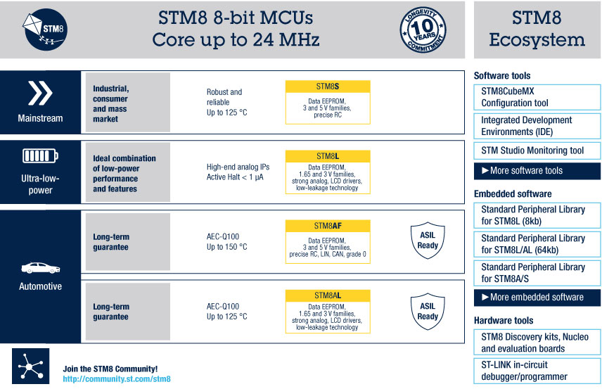
调试接口 SWIM
STM8 采用 SWIM( single wire data interface ) 接口调试。SWIM接口只需要一根传输线，即可完成双向的传输。传输过程，都是由主控制端发起，设备端做出反应。
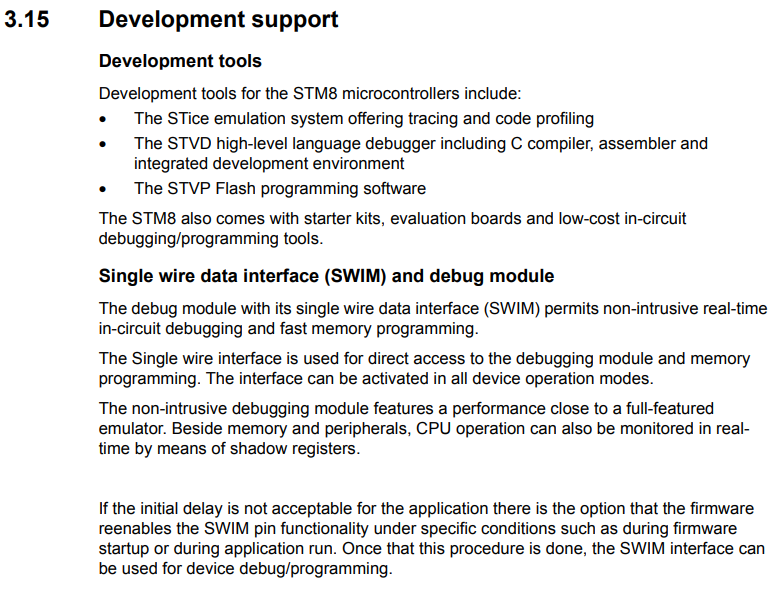
手册中讲到存在代码读保护（CRP）机制。我们想要从中提取固件，CRP 必须是关闭状态。或使用故障注入 Bypass CRP。
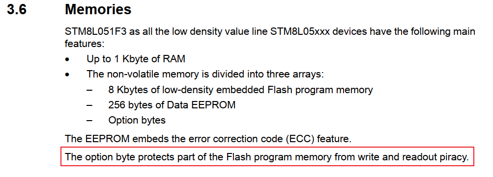
根据芯片手册可知 3 号引脚是 SWIM 调试接口。使用万用表分析出预留的 SWIM 调试接口，结果如下。
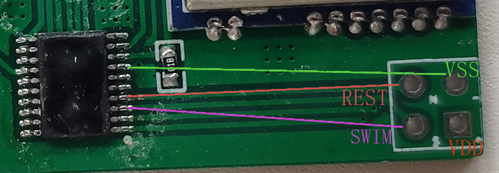
SWIM 调试接口连接表如下。
| 仿真器端口 | 目标板 | 连线方式 |
|---|---|---|
| VDD | VCC | 连接STM8目标板的电源VCC |
| DATA | SWIM | 连接STM8目标板的SWIM PIN |
| GND | VSS | 连接STM8目标板的电源GND |
| RESET | RESET | 连接STM8目标板的RESET PIN |
使用 ST-LINK V2 按照上表连接。

然后使用 Openocd 读取固件。
1 | openocd -f interface/stlink-dap.cfg -f target/stm8l152.cfg |
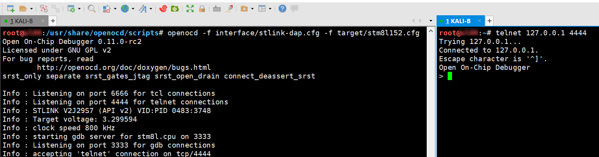
根据手册中的 Meomery Map 提取固件。
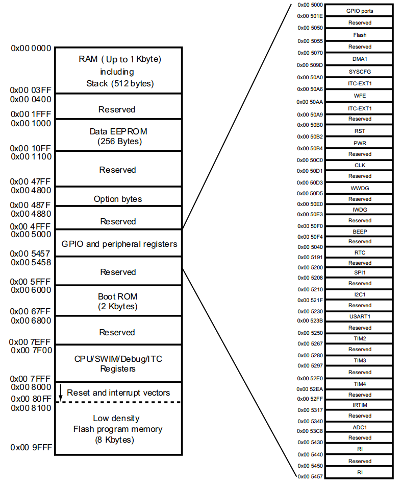
使用命令 stm8l.cpu mdd 提取固件，Flash 的起始位置为 0x8100，mdd 读取的长度为（0xa000-0x8100）/ 8 = 992，然后转换为二进制就得到了固件。
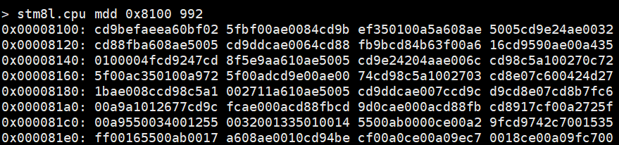
另外还可以使用 STVP 读取 Flash，推荐使用 STVP 图形化操作很简单。
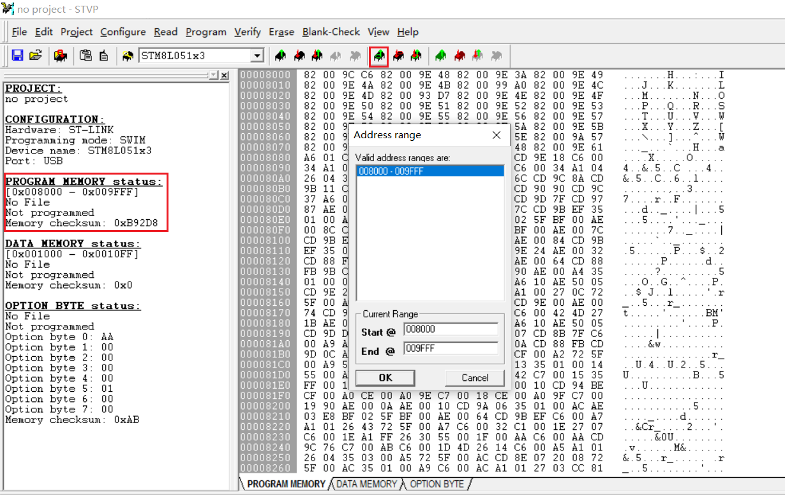
固件分析
IDA STM8 识别
IDA 原生不支持 STM8 芯片，但可以通过插件(STM8-IDA)来完成。
IDA STM8 处理器插件编译
找到了一个名为 STM8-IDA 的 IDA 插件，支持 STM8 部分芯片识别。直接下载 release 报错，猜测是版本不兼容引7起的。当前我使用的数据 IDA 7.5，release 版本插件是基于 IDA SDK 7.2 开发的。不能使用于是开始自行编译。
使用 Visual Studio 2019 编译 STM8 处理器插件，需要 IDA SDK 库。网上下载的 IDA 7.5 大多都有，但可能没有解压，需要手动解压。
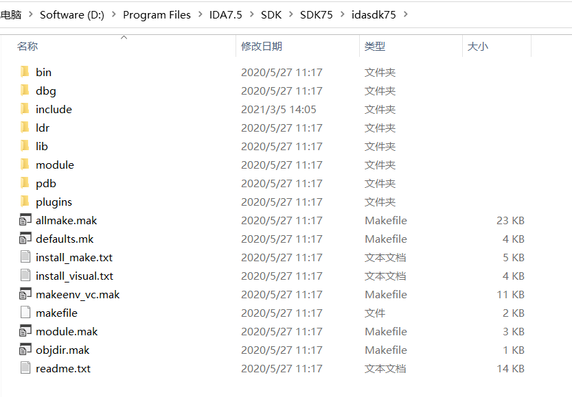
准备好 Visual Studio 和 IDASDK 之后，就可以使用 Visual Studio 编译了。首先需要配置编译选项。点击菜单栏 “项目”，选择 “属性” 进入项目属性配置页面。
设置 IDASDK 路径
依此选择 C/C++ 常规 附加包含目录，将 IDASDK 的 module 和 include 路径添加到附件包含目录中。

配置预处理器定义
依此选择 C/C++ 预处理器 预处理器 删除多余的，仅保留如下的内容。
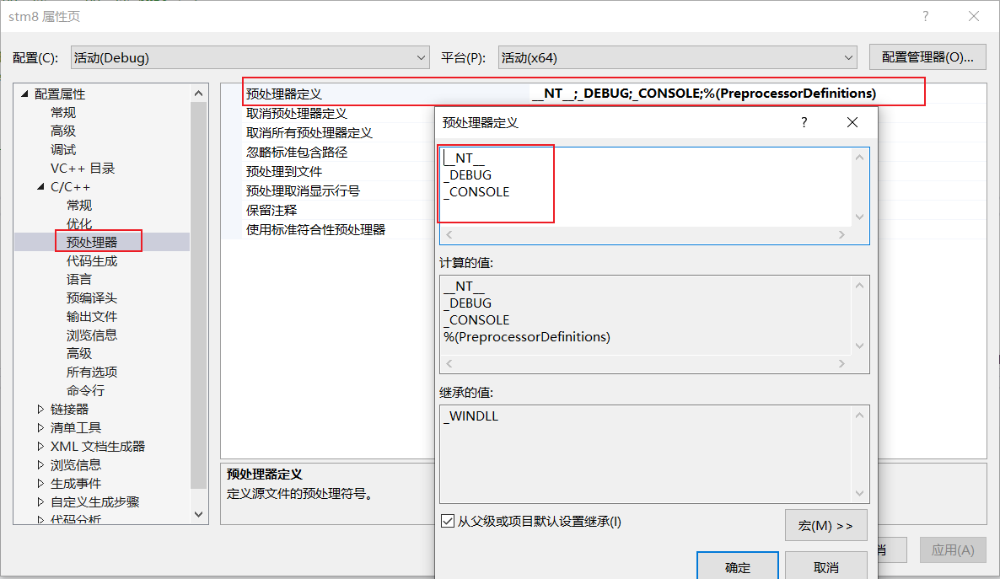
配置附件库目录
依此选择 链接器 常规 附件库目录，按照平台选择 lib 库路径，Windows 64位选择 x64_win_vc_32。
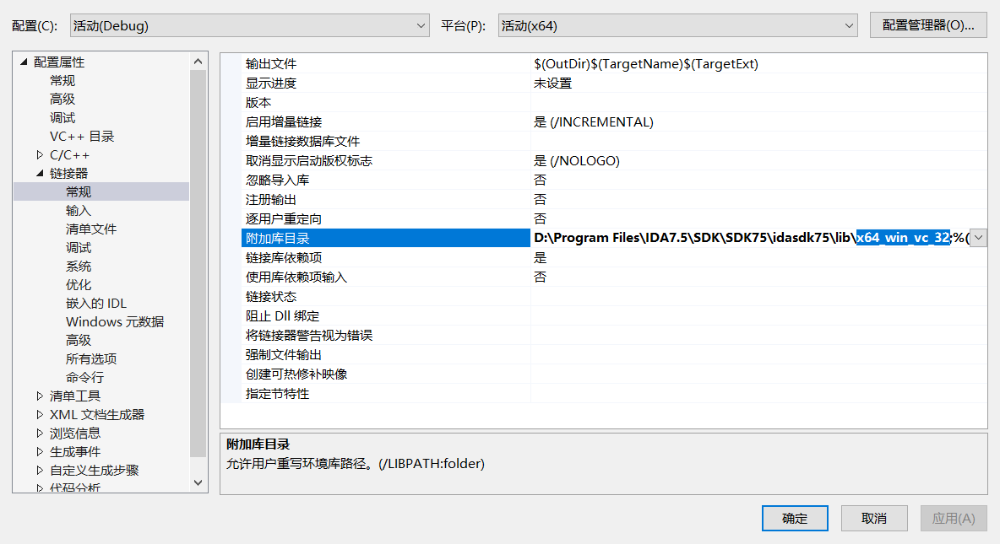
配置附件依赖项
在链接器 输入 附加依赖项 添加 ida.lib 。
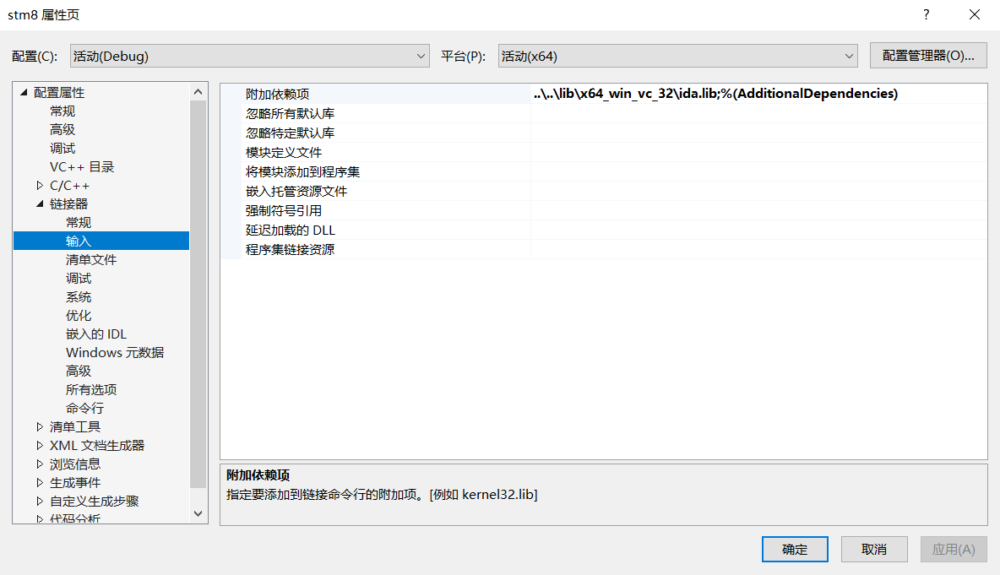
如果需要动态调试的话，还需要配置调试命令。
在 调试 命令 中设置 IDA.exe 路径。
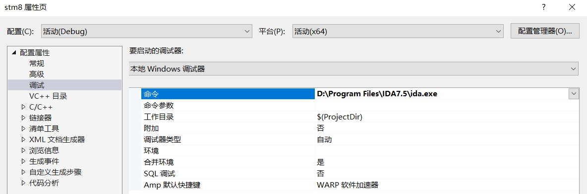
另外，还需要配置 “输出目录” 为 IDA 安装目录下的 procs。
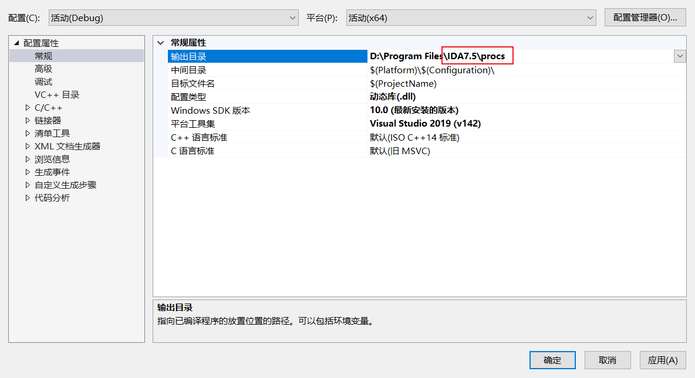
使用插件
将项目下的 stm8.cfg 复制到 IDA 安装目录下的 cfg 目录中。
将插件项目 STM8-IDA/x64/Debug/ 目录下的 stm8.dll 复制到 IDA 安装目录下的 procs 目录中。
最后，打开文件就能选择处理器为 STM8 了。
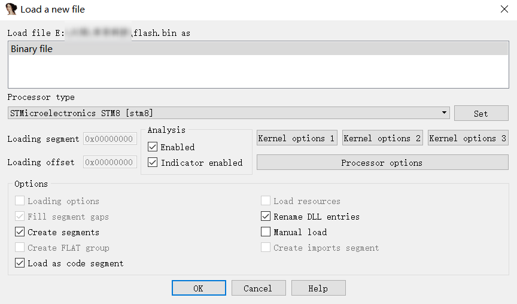
加载的固件是使用 ST Visual Programmer读取的 0x8000-0x9FFF 的内容，大小为 8K。从手册可以看到，RAM 区间为 0x0000 到 0x03FF，Flash 的起始地址为 0x8000。配置好 RAM 和 ROM 参数后，点击确认。
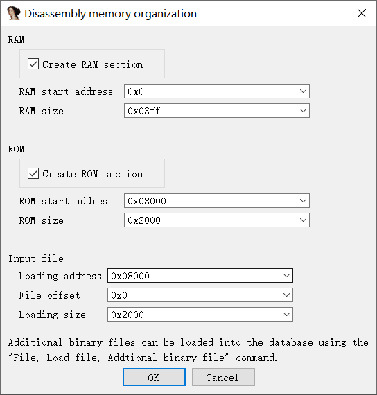
然后，选择芯片型号，这里我用的是 STM8L051F3。
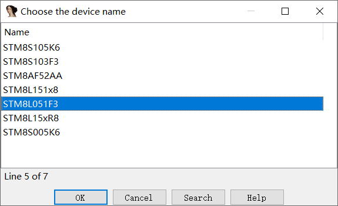
点击确认后，弹出提醒 ，需要用在入口点按 C 后开始自动分析。这个型号芯片是我自己添加的配置，根据芯片手册在 stm8.cfg 添加配置。需要添加的内容包括MEMORY MAP、Interrupt and reset vector assignments、INPUT/OUTPUT PORTS，这些都可以参照现有的配置并根据芯片手册中的相应部分手动添加。
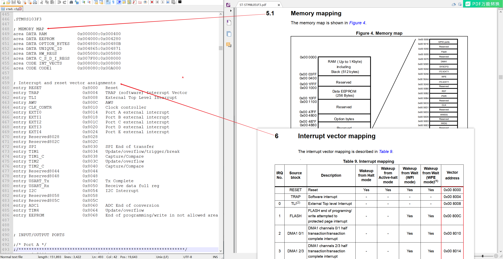
添加了芯片支持以后，选择所属芯片后，再次点击确认，大部分代码已经自动分析了，剩余的按需手动识别。
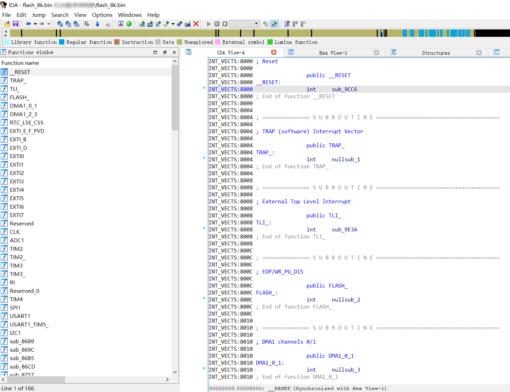
插件分析效果对比
写了一个 DEMO 对比分析一下，以前没有碰到过 STM8，正好对比学习一下。
1 | void delay(uint32_t t) |
把固件写入 STM8 开发板，并开始动态调试。动态调试反汇编的页面给个好评，一句 C 代码后面跟对应的汇编代码很清晰。
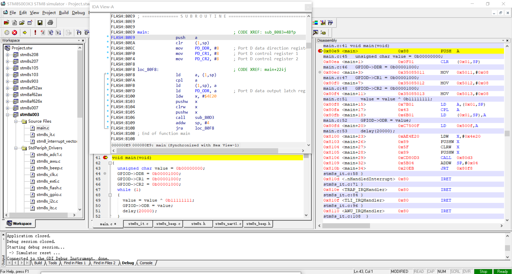
修复 INT_VECTS 段末为不识别
在使用插件时发现了一个问题，IDA 调用刚编译的 STM8-IDA插件分析后，多出了一个 ROM 段，导致分析的内容不完整。
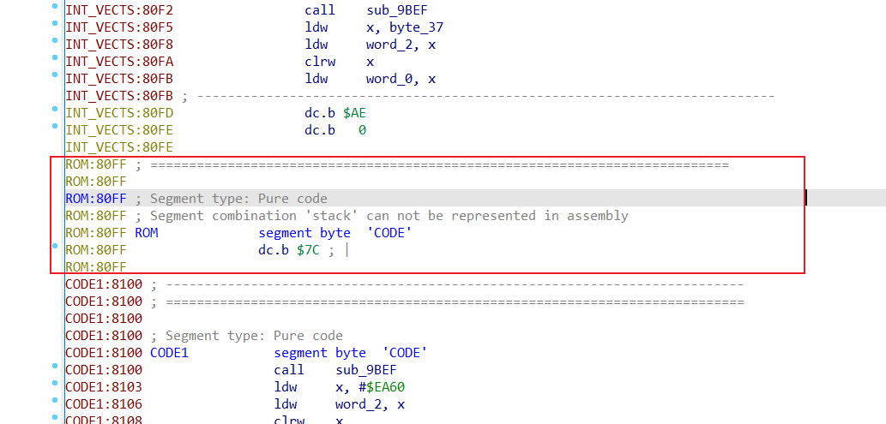
查看 segment 发现，IDA 本身创建的 segment 与 插件之间存在冲突，导致 0x80FF 被独立拿出来作为一个segment。
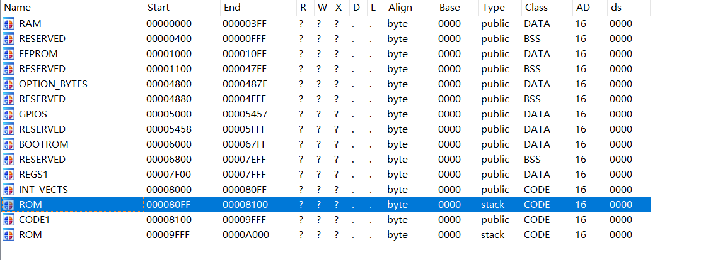
因为 Flash有两个段，Reset and interrupt vectors 和 Flash。
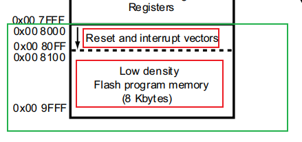
而在 IDA 配置内存结构是给定 ROM 的起始位置和大小。
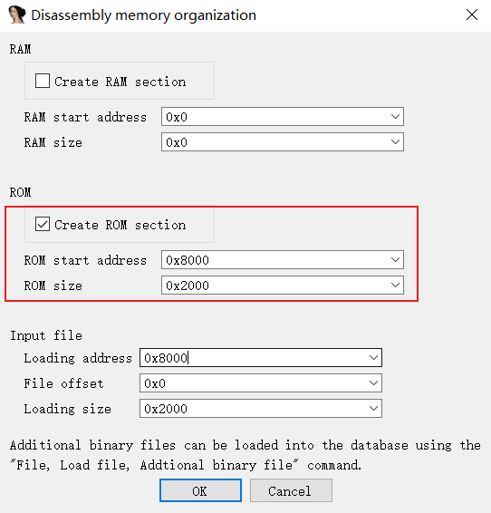
从 segment1 到 segment 11 正常，创建的 segment12(Reset and interrupt vectors ) 属于 ROM，IDA 以为把 ROM 中剩下的部分删掉了，但后面还有 Flash 段，于是又创建了一个段，然后将 Flash 放到 ROM 中，经过这一操作原本属于 Reset and interrupt vectors 的 0x80FF 被独立出来了。
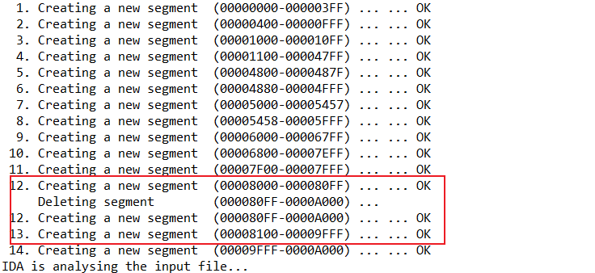
修复：可以在配置文件中，对 ROM 中的每个段末地址加一。
例如，原始段配置，INT_VECTS 的地址段为 0x08000 到 0x080FF，CODE1 的地址段为 0x08100 到 0x9FFF。
1 | area CODE INT_VECTS 0x08000:0x080FF |
更改后的段定义，INT_VECTS 的地址段为 0x08000 到 0x08100，CODE1 的地址段为 0x08100 到 0x10000。
1 | area CODE INT_VECTS 0x08000:0x08100 |
修改之后 IDA 就能就能正常识别处理了。